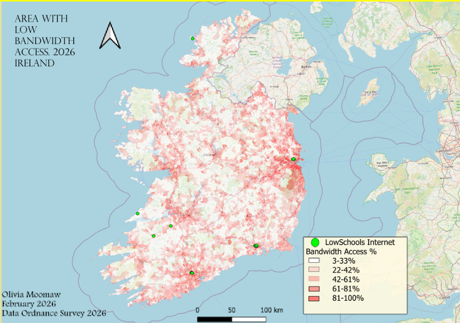

My First Map

This was the very first map I created in GIS! It displays two key variables: school locations with low internet access (represented as point data) and bandwidth access percentages (using polygon or raster data). The map itself is straightforward, using OpenStreetMap as the basemap. Although it incorporates essential map elements such as a scale bar, a north arrow, and a legend, it serves as a great reminder that everyone starts somewhere. Fun fact: I actually built the legend from scratch because I hadn't learned how to insert a layout legend yet!
- Type
- Static map
- Data sources
- Ordnance Survey, Ireland, 2026
- Tools
- QGIS